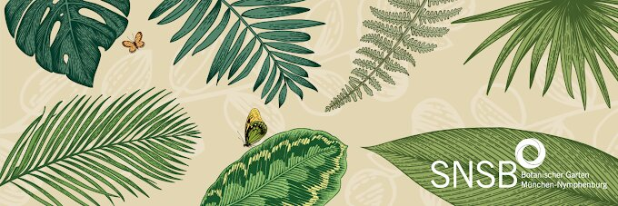

Oh no more boring walking around and nature stuff. You are so wrong kiddo.
There are thousands of plants, from trees to roses, from arctic to alpine variations and from rhododendrons to ferns. All creating a biosphere for loads of other living beings. Amazing isn't it? But the best thing you can go there all year round. Because nature changes with seasons and they have an indoor area.
Botanischer Garten entdecken → Back